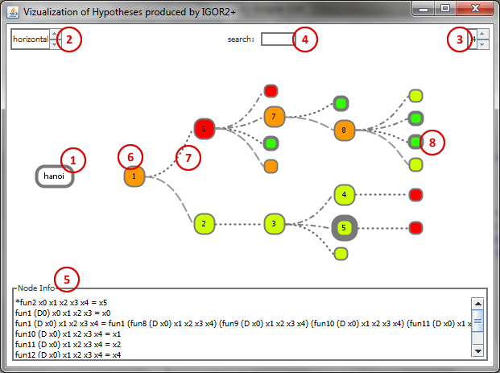

User manual
The user manual can also be downloaded as PDF.
If you want to obtain the source code and/or the runnable jar file, please contact me. The program is written in Java, so you need at least Java 1.6 (Download: http://java.com). The istviewer.jar file contains all classes that are needed to run the program (including the external libraries).
Getting started
- Save the istviewer.jar file to your computer.
- Start the command line and go to the folder containing the istviewer.jar file.
- Type istviewer.jar [path of the log file] to start the parsing and visualization.
Example Windows:
C:\Programs>istviewer.jar “D:\Eigene Dateien\Logfiles\hanoi.log” - If you want console messages to be displayed, you have to type java -jar at the beginning of the command:
C:\Programs>java –jar istviewer.jar “D:\Eigene Dateien\Logfiles\hanoi.log” - If you need some information about the program, type java -jar istviewer.jar -h.
C:\Programs>java –jar istviewer.jar -h - If you want to read the user manual, type java -jar istviewer.jar -m.
C:\Programs>java –jar istviewer.jar -m
Frame components
- Name of the function.
- Orientation selection.
- Weight selection.
- Search field.
- Node information. Displays the hypotheses of the selected node.
- Node. The number shows the order in which the nodes were expanded. The color stands for the node weight. In comparison to branch nodes leaf nodes are displayed smaller.
- Edge. The stroke styles differ according to the operator that was used to create the child hypotheses.
- Result Node. The result nodes are accented by a thicker border.
Controls
The spinners in the top left (2) and top right (3) corners are used to select the orientation and weight to display.
The search field in the top center (4) is used to search for a node with a specific number.
A single left click on a node shows the according hypotheses in the node info field (5) and expands the children of the node.
A double left click on a node expands the complete subtree of the node.
A single right click on a node collapses all children of the node.
Hovering over nodes shows a tool tip containing the node weight. Hovering over edges shows a tool tip containing the operator.
The tree can be dragged and dropped inside the frame by clicking and holding the left mouse button beside the tree view.
The tree can be zoomed by rolling the wheel button.